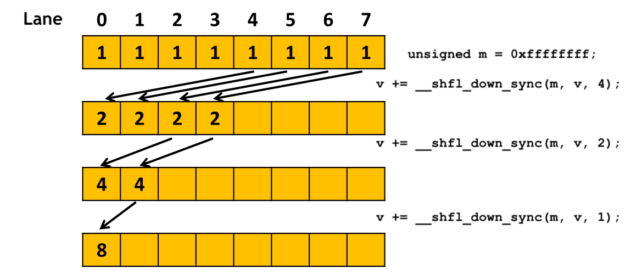

使用 CUDA 的 warp-level 原语
本文是NVIDA Blog文章Using CUDA Warp-Level Primitives的全文翻译和深度解析。
从CUDA 9.0 开始，CUDA引入了更加灵活的group的选择，这一方面使得CUDA编程更加简单，一方面也使得一些原有的功能发生了一些改变。本文重点对warp级别的原语（primitives）进行一些介绍。
在GPU中，线程（thread）被组织为warp，然后warp会按照SIMT（单指令多线程，Single Instruction Multiple Thread）的形式来执行。很多CUDA程序都可以通过充分利用warp执行来达到很高的性能。
Warp级别原语（Warp-level Primitives）
NVIDIA GPUs和CUDA编程模型使用一种被称为SIMT的执行模式。SIMT和SIMD（Single Instruction, Multiple Data)的区别主要是：
- 在SIMD架构中，每个指令在不同的数据上并行的进行相同的操作。SIMD通常采用向量寄存器和向量执行单元来实现。而vector执行是通过一个标量的向量来实现的。简言之，一个线程调度，多个向量寄存器和执行单元上并行完成相同指令。
- 而SIMT架构中，并不只是使用单一的线程，并且数据也不要求采用向量存储方式。多个线程会发起普通的指令（而非向量指令）在任意数据上执行。我们可以想象一下GPU的执行时候，可以根据每个thread的线程来计算需要操作的数据位置。实际上，可以在SIMT的架构中进一步实现SIMD的子架构，以Pascal架构中支持的INT8计算模式为例。该模式可以非常高效地提高深度神经网络的计算。在INT8的计算中，要求被计算的4个数据相互邻近（每个8bit），4个指令在一个GPU线程上执行。而这个线程是SIMT中的一个线程。
在NVIDIA的GPU上，32个并行线程（相邻线程）被组成一个warp，每一个线程可以访问它自己的寄存器，从不同显存地址（可以不相邻）读写数据。并且，这些线程是可以支持分歧的控制流路径（divergent control flow paths)。本文中，我们重点放在使用Warp级别原语的使用。
代码1 是一个warp-level 原语的例子。我们使用了一个__shfl_down_sync() 来实现一个tree-reduction方式来计算一个warp中线程val值得和。该代码执行完之后，warp中的第一个线程中的val值就等于最终的和。
#define FULL_MASK 0xffffffff
for (int offset = 16; offset > 0; offset /= 2)
val += __shfl_down_sync(FULL_MASK, val, offset);
这个计算可以用下面的图来说明：

一个warp中包含32通道（lane），每一个线程占用一个通道。对于处于 X 通道的线程，__shfl_down_sync(FULL_MASK, val, offset) 来获得在同一个warp中的第 X+offset 通道的val值。这一数据交换在regitster中进行的，因此其效率高于共享内存。使用共享内存需要一次读，一次写，并且需要一个额外的寄存器来保存这些地址。
CUDA 9中包含了三类warp级别原语：
- 同步地数据交换（Synchronized data exchange）：在同一warp中不同thread之间交换数据：
- __all_sync, __any_sync, __uni_sync, __ballot_sync
- __shfl_sync, __shfl_up_sync, __shfl_down_sync, __shfl_xor_sync
- __match_any_sync, __match_all_sync
- Active mask query: 返回一个32-bit的mask来表示warp中哪些thread是活动的。
- __activemask
- 线程同步（Thread synchronization)：同步warp中的线程，并提供一个内存围栏（关于内存围栏的概念，可以在Volatile 限定词（Qualifier）和内存围栏（memory fence) 中找到详细解释）。
同步地数据交换（Synchronized data exchange）
每一个”同步地数据交换“原语都会在warp中的一组线程（不一定是所有线程）上执行一个聚合操作（collective operation)。代码2 展示了其中的三个操作。每个线程可以调用 __shfl_sync() 或者 __shfl_down_sync() 来接收同一个warp中其他线程的数据。每个线程也可以调用__ballot_sync()来检验一个mask中的所有活动线程是否满足predicate的条件。该原语返回一个整形数，该整形数的第N位(bit)为真，当且仅当：
- predicate的检测结果为真；
- 第N个线程为active。
int __shfl_sync(unsigned mask, int val, int src_line, int width=warpSize);
int __shfl_down_sync(unsigned mask, int var, unsigned detla,
int width=warpSize);
int __ballot_sync(unsigned mask, int predicate);
通常使用一个32位的掩码（mask）来表示参与原语的线程。每一个参与的线程在执行相应操作之前必须同步，以保证其得到正确的结果。例如__shfl_sync实际是先同步所有的数据，再执行shfl的操作。因此__shfl_sync实际上可以保证一个同步。这里是一个很重要的变化：在CUDA9.0 之前，__shfl这个操作实际上是不保证一定同步的，但是在绝大多数的应用中，并没有出现不同步的情况。在CUDA9.0 中，不再使用__shfl等非同步原语。如果你有CUDA9.0之前的代码，使用了__shfl原语，请将其更换为__shfl_sync。
一个常被问到的问题是：应该使用什么样的掩码参数？我们可以简单的理解为mask就是一组需要参与聚合操作的线程的id。所以，这个线程组的组成实际是程序逻辑决定的。我们还是以代码1 这个reduction代码为例子。假设我们希望计算input[]数组所有元素的和，并且这个数组长度NUM_ELEMENTS是小于这个block里面的线程数目的。我们可以使用代码3这个代码来实现。
unsigned mask = __ballot_sync(FULL_MASK, threadIdx.x < NUM_ELEMENTS);
if (threadIdx.x < NUM_ELEMENTS) {
val = input[threadIdx.x];
for (int offset = 16; offset > 0; offset /= 2)
val += __shfl_down_sync(mask, val, offset);
…
}
这个代码首先使用 threadIdx.x < NUM_ELEMENTS 来确认一个线程是否参与这个reduction过程。其中__ballot_sync() 是用来计算__shfl_down_sync()中使用的掩码的。而__ballot_sync()本身使用FULL_MASK （0xffffffff），表示所有的32个线程都需要参与投票。
在Volta或者更晚一些的架构中，数据交换原语可以被用于线程分歧分支（thread-divergent branchs）中-- 一个线程可以执行和warp中其他线程不同的路径。代码4 展示了这样一个例子，一个warp中所有线程获得第0通道的val值，但是奇数和偶数的线程执行一个if语句中的不同分支。
if (threadIdx.x % 2) {
val += __shfl_sync(FULL_MASK, val, 0);
…
}
else {
val += __shfl_sync(FULL_MASK, val, 0);
…
}
在最新的Volta（或者未来的）GPU上，你可以使用warp同步原语，而不需要去考虑这个函数是执行在哪个线程分歧分支上。
查询活跃线程的掩码（Active Mask Query）
__active_mask() 返回一个32位无符号整形掩码（mask），该掩码的每一位表示了当前warp中线程的活动（active）情况。换句话说，该掩码表示了在同一个warp中也在执行__active_mask()的线程。该原语对于opportunistic warp-level programming 技术（后续会详细解释）、debugging和理解程序行为非常有用。
但是，正确的使用__active_mask()是非常重要的。代码5 是一个错误的使用的例子。该代码试图进行代码4 中的求和reduction，但是它不使用 __active_mask()
__activemask() returns a 32-bit unsigned int mask of all currently active threads in the calling warp. In other words, it shows the calling thread which threads in its warp are also executing the same __activemask(). This is useful for the :opportunistic warp-level programming” technique we explain later, as well as for debugging and understanding program behavior.
However, it’s important to use __active_mask() correctly. Listing 5 illustrates an incorrect use. The code tries to perform the same sum reduction shown in Listing 4, but instead of using __ballot_sync() to compute the mask before the branch, it uses __active_mask() inside the branch. This is incorrect, as it would result in partial sums instead of a total sum. The CUDA execution model does not guarantee that all threads taking the branch together will execute the __active_mask() together. Implicit lock step execution is not guaranteed, as we will explain.
//
// Incorrect use of __active_mask()
//
if (threadIdx.x < NUM_ELEMENTS) {
unsigned mask = __active_mask();
val = input[threadIdx.x];
for (int offset = 16; offset > 0; offset /= 2)
val += __shfl_down_sync(mask, val, offset);
…
}
Warp 同步（Synchronization）
When threads in a warp need to perform more complicated communications or collective operations than what the data exchange primitives provide, you can use the __syncwarp() primitive to synchronize threads in a warp. It is similar to the __syncthreads() primitive (which synchronizes all threads in the thread block) but at finer granularity.
void __syncwarp(unsigned mask=FULL_MASK);
The __syncwarp() primitive causes the executing thread to wait until all threads specified in mask have executed a __syncwarp() (with the same mask) before resuming execution. It also provides a memory fence to allow threads to communicate via memory before and after calling the primitive.
Listing 6 shows an example of shuffling the ownership of matrix elements among threads in a warp.
float val = get_value(…);
__shared__ float smem[4][8];
// 0 1 2 3 4 5 6 7
// 8 9 10 11 12 13 14 15
// 16 17 18 19 20 21 22 23
// 24 25 26 27 28 29 30 31
int x1 = threadIdx.x % 8;
int y1 = threadIdx.x / 8;
// 0 4 8 12 16 20 24 28
// 1 5 10 13 17 21 25 29
// 2 6 11 14 18 22 26 30
// 3 7 12 15 19 23 27 31
int x2= threadIdx.x / 4;
int y2 = threadIdx.x % 4;
smem[y1][x1] = val;
__syncwarp();
val = smem[y2][x2];
use(val);
Assume a 1-D thread block is used (i.e. threadIdx.y is always 0). At the beginning of the code, each thread in a warp owns one element of a 4×8 matrix with row-major indexing. In other words, lane 0 owns [0][0] and lane 1 owns [0][1]. Each thread stores its value into the corresponding position of a 4×8 array in shared memory. Then __syncwarp() is used to ensure all threads have done the store, before each thread reads from a transposed position in the array. In the end, each thread in the warp owns one element of the matrix with column-major indexing: lane 0 owns [0][0] and lane 1 owns [1][0].
Make sure that __syncwarp() separates shared memory reads and writes to avoid race conditions. Listing 7 illustrates an incorrect use in a tree sum reduction in shared memory. There is a shared memory read followed by a shared memory write between every two __syncwarp() calls. The CUDA programming model does not guarantee that all the reads will be performed before all the writes, so there is a race condition.
unsigned tid = threadIdx.x;
// Incorrect use of __syncwarp()
shmem[tid] += shmem[tid+16]; __syncwarp();
shmem[tid] += shmem[tid+8]; __syncwarp();
shmem[tid] += shmem[tid+4]; __syncwarp();
shmem[tid] += shmem[tid+2]; __syncwarp();
shmem[tid] += shmem[tid+1]; __syncwarp();
Listing 8 fixes the race condition by inserting extra __syncwarp() calls. The CUDA compiler may elide some of these synchronization instructions in the final generated code depending on the target architecture (e.g. on pre-Volta architectures).
unsigned tid = threadIdx.x;
int v = 0;
v += shmem[tid+16]; __syncwarp();
shmem[tid] = v; __syncwarp();
v += shmem[tid+8]; __syncwarp();
shmem[tid] = v; __syncwarp();
v += shmem[tid+4]; __syncwarp();
shmem[tid] = v; __syncwarp();
v += shmem[tid+2]; __syncwarp();
shmem[tid] = v; __syncwarp();
v += shmem[tid+1]; __syncwarp();
shmem[tid] = v;
On the latest Volta (and future) GPUs, you can also use __syncwarp() in thread-divergent branches to synchronize threads from both branches. But once they return from the primitive, the threads will become divergent again. See Listing 13 for such an example.
Opportunistic Warp-level Programming
As we showed in the Synchronized Data Exchange section, the membership mask used in the synchronized data exchange primitives is often computed before a branch condition in the program flow. In many cases, the program needs to pass the mask along the program flow; for example, as a function argument when warp-level primitives are used inside a function. This may be difficult if you want to use warp-level programming inside a library function but you cannot change the function interface.
Some computations can use whatever threads happen to be executing together. We can use a technique called opportunistic warp-level programming, as the following example illustrates. (See this post on warp-aggregated atomics for more information on the algorithm, and this post for discussion of how Cooperative Groups makes the implementation much simpler.)
// increment the value at ptr by 1 and return the old value
__device__ int atomicAggInc(int *ptr) {
int pred;
int mask = __match_all_sync(__activemask(), ptr, &pred);
int leader = __ffs(mask) – 1; // select a leader
int res;
if(lane_id() == leader) // leader does the update
res = atomicAdd(ptr, __popc(mask));
res = __shfl_sync(mask, res, leader); // get leader’s old value
return res + __popc(mask & ((1 << lane_id()) – 1)); //compute old value
}
atomicAggInc() atomically increments the value pointed to by ptr by 1 and returns the old value. It uses the atomicAdd() function, which may incur contention. To reduce contention, atomicAggInc replaces the per-thread atomicAdd() operation with a per-warp atomicAdd(). The __activemask() in line 4 finds the set of threads in the warp that are about to perform the atomic operation. __match_all_sync() returns the bit mask of the threads that have the same value ptr, partitioning the incoming threads into groups whose members have the same ptr value. Each group elects a leader thread (line 5), which performs the atomicAdd() (line 8) for the whole group. Every thread gets the old value from the leader (line 9) returned by the atomicAdd(). Line 10 computes and returns the old value the current thread would get from atomicInc() if it were to call the function instead of atomicAggInc.
Implicit Warp-Synchronous Programming is Unsafe
CUDA toolkits prior to version 9.0 provided a (now legacy) version of warp-level primitives. Compared with the CUDA 9 primitives, the legacy primitives do not accept a mask argument. For example, int __any(int predicate) is the legacy version of int __any_sync(unsigned mask, int predicate).
The mask argument, as explained previously, specifies the set of threads in a warp that must participate in the primitives. The new primitives perform intra-warp thread-level synchronization if the threads specified by the mask are not already synchronized during execution.
The legacy warp-level primitives do not allow programmers to specify the required threads and do not perform synchronization. Therefore, the threads that must participate in the warp-level operation are not explicitly expressed by the CUDA program. The correctness of such a program depends on implicit warp-synchronous behavior, which may change from one hardware architecture to another, from one CUDA toolkit release to another (due to changes in compiler optimizations, for example), or even from one run-time execution to another. Such implicit warp-synchronous programming is unsafe and may not work correctly.
For example, in the following code, let’s assume all 32 threads in a warp execute line 2 together. The if statement at line 4 causes the threads to diverge, with the odd threads calling foo() at line 5 and the even threads calling bar() at line 8.
// Assuming all 32 threads in a warp execute line 1 together.
assert(__ballot(1) == FULL_MASK);
int result;
if (thread_id % 2) {
result = foo();
}
else {
result = bar();
}
unsigned ballot_result = __ballot(result);
The CUDA compiler and the hardware will try to re-converge the threads at line 10 for better performance. But this re-convergence is not guaranteed. Therefore, the ballot_result may not contain the ballot result from all 32 threads.
Calling the new __syncwarp() primitive at line 10 before __ballot(), as illustrated in Listing 11, does not fix the problem either. This is again implicit warp-synchronous programming. It assumes that threads in the same warp that are once synchronized will stay synchronized until the next thread-divergent branch. Although it is often true, it is not guaranteed in the CUDA programming model.
__syncwarp();
unsigned ballot_result = __ballot(result);
The correct fix is to use __ballot_sync() as in Listing 12.
unsigned ballot_result = __ballot_sync(FULL_MASK, result);
A common mistake is to assume that calling __syncwarp() before and/or after a legacy warp-level primitive is functionally equivalent to calling the sync version of the primitive. For example, is __syncwarp(); v = __shfl(0); __syncwarp(); the same as __shfl_sync(FULL_MASK, 0)? The answer is no, for two reasons. First, if the sequence is used in a thread-divergent branch, then __shfl(0) won’t be executed by all threads together. Listing 13 shows an example. The __syncwarp() at line 3 and line 7 would ensure foo() is called by all threads in the warp before line 4 or line 8 is executed. Once threads leave the __syncwarp(), the odd threads and the even threads become divergent again. Therefore, the __shfl(0) at line 4 will get an undefined value because lane 0 is inactive when line 4 is executed. __shfl_sync(FULL_MASK, 0) can be used in thread-divergent branches without this problem.
v = foo();
if (threadIdx.x % 2) {
__syncwarp();
v = __shfl(0); // L3 will get undefined result because lane 0
__syncwarp(); // is not active when L3 is executed. L3 and L6
} else { // will execute divergently.
__syncwarp();
v = __shfl(0);
__syncwarp();
}
Second, even when the sequence is called by all the threads together, the CUDA execution model does not guarantee threads will stay convergent after leaving __syncwarp(), as Listing 14 shows. Implicit lock-step execution is not guaranteed. Remember, thread convergence is guaranteed only within explicitly synchronous warp-level primitives.
assert(__activemask() == FULL_MASK); // assume this is true
__syncwarp();
assert(__activemask() == FULL_MASK); // this may fail
Because using them can lead to unsafe programs, the legacy warp-level primitives are deprecated starting in CUDA 9.0.
Update Legacy Warp-Level Programming
If your program uses legacy warp-level primitives or any form of implicit warp-synchronous programming (such as communicating between threads of a warp without synchronization), you should update the code to use the sync version of the primitives. You may also want to restructure your code to use Cooperative Groups, which provides a higher level of abstraction as well as new features such as multi-block synchronization.
The trickiest part of using the warp-level primitives is figuring out the membership mask to be used. We hope the above sections give you a good idea where to start and what to look out for. Here is a list of suggestions:
- Don’t just use FULL_MASK (i.e. 0xffffffff for 32 threads) as the mask value. If not all threads in the warp can reach the primitive according to the program logic, then using FULL_MASK may cause the program to hang.
- Don’t just use __activemask() as the mask value. __activemask() tells you what threads happen to be convergent when the function is called, which can be different from what you want to be in the collective operation.
- Do analyze the program logic and understand the membership requirements. Compute the mask ahead based on your program logic.
- If your program does opportunistic warp-synchronous programming, use “detective” functions such as __activemask() and __match_all_sync() to find the right mask.
- Use __syncwarp() to separate operations with intra-warp dependences. Do not assume lock-step execution.
One last trick. If your existing CUDA program gives a different result on Volta architecture GPUs, and you suspect the difference is caused by Volta’s new independent thread scheduling which can change warp synchronous behavior, you may want to recompile your program with nvcc options -arch=compute_60 -code=sm_70. Such compiled programs opt-in to Pascal’s thread scheduling. When used selectively, it can help pin down the culprit module more quickly, allowing you to update the code to avoid implicit warp-synchronous programming.

Volatile 限定词（Qualifier）和内存围栏（memory fence)
这边blog是从nvidia blog上最新的文章Using CUDA Warp-Level Primitives 引申而来。原文主要介绍了CUDA 9.0中引入的一些新的warp级别的原语(primitives)。本文中就里面提到一些概念进行引申讲解。
在讲到__syncwarp()时候提到了：
The __syncwarp() primitive causes the executing thread to wait until all threads specified in mask have executed a __syncwarp() (with the same mask) before resuming execution. It also provides a memory fence to allow threads to communicate via memory before and after calling the primitive.
那这个memory fence是一个什么概念呢？
内存围栏（memory fence)
CUDA 编程模型假定了一种弱顺序(weakly-ordered)内存模型。也就是说一个CUDA thread 将数据写入共享内存(shared memory)，全局内存（global memory)，pinned CPU内存（page-locked host memory)，或者对等设备（peer device，可以与当前设备进行P2P通信的设备）的内存时，并不需要与数据被观察到的顺序一致。
用一个实际例子来说明：
假设下面的代码中，thread 1 执行writeXY()，而thread 2 执行readXY()，thread 2读取到的值是多少呢？
__device__ volatile int X = 1, Y = 2;
__device__ void writeXY() {
X = 10; Y = 20;
}
__device__ void readXY() {
int A = X; int B = Y;
}
如果是一个强顺序内存模型(strongly-ordered memory model)中，只有可能是
- A=1, B=2
- A=10, B=2
- A=10, B=20
因为虽然两个threads的执行完成可能有先有后，但是A=X, B=Y的必须在语义学上是前后关系（也就是被观察顺序）。因此，上述三种情况分别是：
- A=1, B=2：thread 1 没有执行完X=10, Y=20的操作；thread 2 已经执行完了A=X, B=Y的操作。
- A=10, B=2：thread 2 执行完X=10, 还没有执行Y=20；thread 2 已经执行完了A=X, B=Y的操作，所以Y的值还没有更新。
- A=10, B=20：thread 1 执行完X=10, Y=20；thread 2读取了对应数据，X和Y都是最新的值。
但是在CUDA使用的弱顺序内存模型中，可能会出现：
- A=1, B=20
的情况。也就是说，虽然语义上A=10比B=20更早出现，但是CUDA的内存模型并不保证这一顺序。
内存围栏函数可以被用来保证实际内存读取顺序和语义学顺序相同。
在CUDA中提供了三个内存围栏函数：
void __threadfence_block();
void __threadfence();
void __threadfence_system();
这些函数都保证在函数调用前的内存操作不会晚于函数调用后的。
我们考虑一个比较常见的情景，这个技巧会在很多地方用到，大家也可以自己思考一下对这个问题有一些什么样的解决方案：
用一次核函数（kernel）调用计算N个数的和，也就是我们常说的reduction操作。我们实现的逻辑是：
- 每个block首先计算这个数组的一个子集，并将计算结果写到全局内存中。提示，在改部分计算中可以使用warp原语、共享内存等方法来进一步加速，请参考相应的post。
- 当所有block都完成了这个计算，最后一个block从全局内存中读取这些部分和，并且将他们相加得到最终结果。
- 为了确认哪一个block最后完成操作。每一个block都会用原子加法(atomic add)将一个计数器（counter）加一。这样，最后一个block就是读取到counter值为gridDim.x-1的那个block。
如果没有在存储部分和与计数器加一之间插入内存未来，计数器可能会在部分和存储完成之前加一，这样最终计算的结果可能会缺失一部分。
__device__ unsigned int count = 0;
__shared__ bool isLastBlockDone;
__global__ void sum(const float* array, unsigned int N, volatile float* result)
{
// Each block sums a subset of the input array.
float partialSum = calculatePartialSum(array, N);
if (threadIdx.x == 0) {
// Thread 0 of each block stores the partial sum
// to global memory. The compiler will use
// a store operation that bypasses the L1 cache
// since the "result" variable is declared as
// volatile. This ensures that the threads of
// the last block will read the correct partial
// sums computed by all other blocks.
result[blockIdx.x] = partialSum;
// Thread 0 makes sure that the incrementation
// of the "count" variable is only performed after
// the partial sum has been written to global memory.
__threadfence();
// Thread 0 signals that it is done.
unsigned int value = atomicInc(&count, gridDim.x);
// Thread 0 determines if its block is the last
// block to be done.
isLastBlockDone = (value == (gridDim.x - 1)); }
// Synchronize to make sure that each thread reads
// the correct value of isLastBlockDone.
__syncthreads();
if (isLastBlockDone) {
// The last block sums the partial sums
// stored in result[0 .. gridDim.x-1]
float totalSum = calculateTotalSum(result);
if (threadIdx.x == 0) {
// Thread 0 of last block stores the total sum
// to global memory and resets the count
// varialble, so that the next kernel call
// works properly.
result[0] = totalSum; count = 0;
}
}
}
内存围栏只会影响一个线程中内存操作的顺序。他并不能像__syncthreads()那样保证这些内存操作对于同block中的其他线程可见。也就是说，由于有L1 cache的存在，其他block可能读取到的是没有更新的result值。在我们以往的经验中，这个是用__syncthreads()来保证的。在这个例子里，volatile限定词被用来保证内存操作的可见性。
volatile 限定词（Qualifier）
从CUDA编程手册我们可以看到：
The compiler is free to optimize reads and writes to global or shared memory (for example, by caching global reads into registers or L1 cache) as long as it respects the memory ordering semantics of memory fence functions (Memory Fence Functions) and memory visibility semantics of synchronization functions (Synchronization Functions).
These optimizations can be disabled using the volatile keyword: If a variable located in global or shared memory is declared as volatile, the compiler assumes that its value can be changed or used at any time by another thread and therefore any reference to this variable compiles to an actual memory read or write instruction.
对于nvcc编译器来说，编译器是可以自由地优化全局内存(global memory)和共享内存(shared memory)的读写顺序。例如，这种优化可以是通过将共享内存的读取缓存到寄存器或者L1缓存中来实现的。但是，这种优化，必须要服从由内存围栏(memory fence)函数所定义出的内存顺序语义(memory ordering semantics)，还必须要服从同步函数(synchronization function)所限制的内存可见性语义（memory visibility semantics)。
如果我们对某一个内存（全局内存或共享内存）使用了volatile这个关键词，编译器将认为该内存的值允许在任意时刻被其他thread修改。因此，该变量的所有引用，都会被编译为真实的读写指令。
Copyright © 2015 Powered by MWeb, Theme used GitHub CSS.